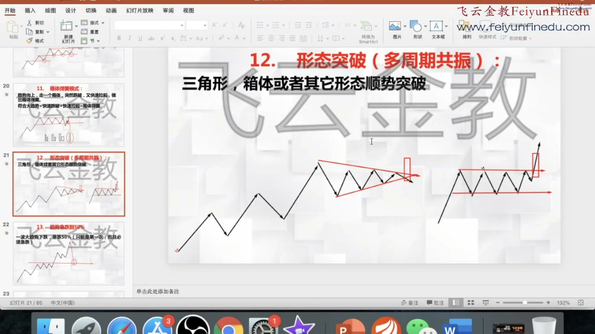
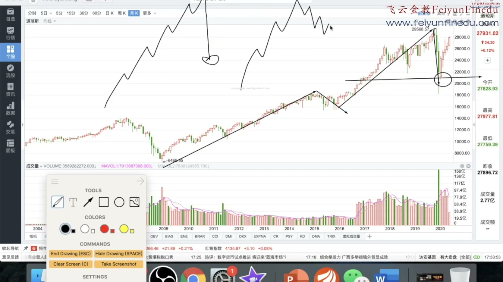

双突破到底是哪两个突破
趋势线所代表的旧惯性被打破，再加上一项有意义的结构参照被越过，构成双重确认。第二项可表现为 2B、头肩/箱体等形态、量能密集区域、关键支撑压力或筹码密集区。几项之间有重叠，课中没有要求全部同时满足。两项可先后完成；买点实例先出现趋势线突破，他仍等待后续形态突破才进入。
先确定大方向和可交易的位置，再等小周期给出结构改变的证据；用止损限定判断失败的代价，用沽压衡量空间，沿趋势管理持仓。双突破是这个体系的核心确认方式，13 类买点是不同情境下的具体入口。
根据用户提供的五段本地视频整理。全文覆盖讲解内容，并将白板、幻灯片和图表与转写交叉核对；关键短暂画面另作定点提取。这里区分了讲师明确说明、本报告的归纳，以及视频仍未讲清的条件。
下面是把五段内容串联后的理解模型；顺序是本报告的整理，不是视频中的逐字口诀。
趋势线所代表的旧惯性被打破，再加上一项有意义的结构参照被越过，构成双重确认。第二项可表现为 2B、头肩/箱体等形态、量能密集区域、关键支撑压力或筹码密集区。几项之间有重叠，课中没有要求全部同时满足。两项可先后完成；买点实例先出现趋势线突破，他仍等待后续形态突破才进入。
大趋势向上，小周期正在回调，在小周期回调结束的结构处找多头机会。这解释了为什么他一面反对逆势抄底，一面教头肩底、2B：小级别可以反转，但最好顺着较大背景。视频也展示区间背景和完全逆势例子，偏好与绝对禁令须分开。
趋势线描述运行状态；形态或关键价格提供结构边界；成交量、历史量能累积和分价图补充买卖力量与交易集中的位置；沽压用于估计前方空间。突破时的放量、某根巨量、某价位长期累积的量不是同一件事。
他偏好已形成方向惯性的延续，但承认逆转处有时空间与止损之比更好。形态看起来成功机会高，不代表前方可赚空间充足；离历史沽压很近，依然可能不是好位置。他借凯利概念强调二者共同影响下注规模，却没有提供可直接计算的完整胜率与仓位模型。
体系包含开仓、结构止损、后续加仓和分批退出。止损与原先依据的形态是否仍存在相关；退出可以先看压力，再看趋势线与形态。退出一笔持仓后，是否反手还要重新看大势，不能把止盈信号直接当反向开仓信号。
逆转后进入持续，持续后再逆转，是他跨周期讲解的共同骨架。白板上的旗形、三角形、箱体顺序只是示意。真正需要识别的是原先的走势是否还在延续、哪里给出了改变的证据，而不是预言下一步必须画成哪一个图。
编号以买点课实际展开的 1–13 页为准。总览另列了初次跌破，实际没有独立编号展开。各类可以重叠，也未必按顺序出现；它们覆盖从回调末端到趋势延续的不同阶段。少数早期试探和首次急跌技巧，不具有双突破同样的确认程度。
| 视频编号 / 名称 | 出现的背景 | 他要求观察的触发 | 容易漏掉的条件 |
|---|---|---|---|
| 1 · 抛售高潮 | 大上涨中的回调，临近关键支撑区。 | 较充分的下跌后出现异常大成交量；小三浪/五浪只是辅助。 | 不能买每一次巨量，尤其不能刚跌破颈线就接。讲师自己不特别推荐单独用它，倾向继续观察 2B、回测或假诱空。 |
| 2 · 2B | 优先顺大逆小，回调末端最好有小平台或形态。 | 所选周期内一根阴线破位，下一根阳线迅速拉回被破区域。 | 本课标准强调第二根就收回；下跌巨量非必要，拉回有量更好。先定周期，不能事后换周期凑图。 |
| 3 · 假诱空 | 一轮下跌后的小形态，最好顺大逆小。 | 经典例子先向上试破，再急速放量下砸，随后 V 形回到原区间，波动明显扩大。 | 只有下砸而没有收回仍可能是真跌破。可按收回参与，或再等双突破；2B 是其中更快速的特殊版本。 |
| 4 · 顺势头肩底 | 大上涨中小级别回调；课内也有大区间未破的例子。 | 小周期形成头肩底后突破颈线。 | 并非所有跌很久后形成的头肩底都一样。可以按头肩独立进入，不要求较大下降趋势线已被突破。 |
| 5 · 双突破 | 回调或逆转结构，优先顺大趋势。 | 趋势线突破，加形态或另一关键价格结构突破；两项均已成立。 | 先破趋势线时可以继续等形态。前方沽压太近仍可能回落；第二参照也可来自量能区或筹码区。 |
| 6 · 强势出现 | 吸筹/整理后期，尚可能处于箱体内部。 | 先缩量，再在所画箱体或类似结构的中轴上方放量。 | 早于箱顶突破；箱底仅放量不等价。中轴和巨量未给固定计算阈值，可与双突破重合。 |
| 7 · 跳跃小溪 | 吸筹后期，准备离开较大的整理区。 | 放量突破颈线或整理上沿。 | 突破后可能马上回落，触及既定失效就先止损。后面再出现突破，可以重新评估。 |
| 8 · 回抽确认 | 已向上越过颈线，随后回落测试原突破区。 | 回测后再向上，课中以重新出现阳线并最好有量配合作确认。 | 触及颈线本身不算完成确认。若失败应处理原计划止损，不能因预想会再拉回而死等。 |
| 9 · N 字突破 | 初步上升趋势已形成，回调后继续向上。 | 回调后再次向上突破，图示为 N 字推进中的再过前高；不必已回测到旧颈线。 | 与回抽确认可相邻或重合。他称其为三连中风险最大的一类，楼梯行情可能刚破高就回撤；前方空间仍要看沽压。 |
| 10 · 支撑压力互换 | 大方向已确认，回到被突破的旧压力区。 | 优先在该区找小周期重新向上的信号，例如 60 分钟定区、5 分钟双突破。 | 反复回同一低位可能偏弱，事不过三是经验而非固定次数。若已是最小一分钟，他也允许按点位试入并止损。 |
| 11 · 箱体弹簧 | 优先在上涨中的箱体整理。 | 快速破箱底后快速拉回区间；不明确时再等后续阳线，也可小周期双突破确认。 | 大十字星本身不够。与 2B 重叠，但本节没有限定必须第二根；也不要求先向上假突破。 |
| 12 · 形态突破／多周期共振 | 大趋势向上，出现顺势的箱体、三角形等整理。 | 整理向上突破，多个观察周期也转为向上；可用均线排列辅助观察。 | 大势仍跌时的小级别上破，不属于他强调的看多共振。各周期组合未规定成唯一清单。 |
| 13 · 首次急跌至半波位置 | 原来持续上涨，突然出现第一次直接而猛烈的回落。 | 回落到所选上涨波段约二分之一位置，寻找第一次反弹。 | 是波段回撤一半，不是现价跌掉 50%；必须首次且急跌。缓慢阶梯下跌、反弹后第二次到位都不适用这一招。未给统一确认线和止损幅度。 |
线是观察工具，不会自动产生买盘。跌破一条趋势线可能先进入横盘，也可能反转；是否触发操作，还取决于当前有没有持仓和选择的交易计划。
云聪特意加上测试二字。价格到达某区间后，既可能守住也可能穿过。趋势线切线的纯几何交点、三角形尖端、整数位，都不能取代实际交易密集区和价格反应。
向上突破后的缩量回落，是他偏好的多头回测情形；上涨趋势失守后出现无量反弹、再放量下跌，反而支持空头判断。只摘下回抽缩量好这几个字会颠倒意思。
趋势线课有单破先观察的讲法，系统课又允许单破先减仓。可以区分为反转判断和持仓管理两层，但视频没有把所有情境写成唯一规则。报告保留这个松动处，不能默默替他定成一套固定算法。
两批方案是趋势线失守出 50%、双跌破出余下 50%；三批示例先在沽压出 30%，趋势线失守再出 30%，结构破坏后处理余量。百分比不是在每笔交易中同时叠加的固定表，也不是初始账户风险比例。
他比较多空图形时，关注高低点的运动方向和加速，而非绝对价格便宜或贵。勾数表示相对偏好，不是百分比；同一形态还要叠加大背景和盈亏比。
支撑阻力课早先说顺缺口方向，后面限定为突破与中继缺口，排除了衰竭缺口。不能删掉这个限定，把每次跳空都视为同样的买卖信号。
2B 的例子即使后来继续下跌，他也只讨论所选小周期内那一段。双突破确认较晚、退出也较晚，这是他接受的代价。持有周期必须与最初寻找信号的周期一致，不能事后用更大行情重写原先的任务。
结尾明确说没有或错过前一种，可以等后一种。2B、头肩、双突破、弹簧会重叠；有的行情也跳过回抽确认。最终整理应识别信号处于哪一阶段及已有哪些证据，不能强求 13 类全出现。
更多触点让趋势线成为较有意义的观察参照；但上涨中总回到同一低位、低点不抬高，讲师又将它视为弱势。值得观察与下次必守是两回事，不能据触碰次数直接给支撑加分。
展开任意课程。时间按钮打开该段自动转写和附近的实际画面；原转写保留识别错误，正文按板书和上下文作了归一。
已读全片 large-v3 转写；已查看 21 个一分钟抽样原画面的联系表。文字仍含 ASR 错词，关键规则按上下文及白板核对。


已读全片 large-v3 转写；已查看 17 个一分钟画面，另放大核对 05:00 与 10:00 白板。


已读全片 large-v3 转写；已查看 11 个一分钟原图组成的联系表。


已读全片 large-v3 转写；已查看 31 张一分钟抽样画面；放大核对核心板书、分批示意、多空图形比较。


已读全片 large-v3 转写；已查看 67 张一分钟抽样画面与 22 张定点补充画面，并对照图示核对第 6、12、13 类及关键例外。




初始趋势线端点、主次周期的固定配对、有效突破是否等收盘、越界容忍度、巨量阈值、回测持续几根 K 线等，仍有主观判断。本报告只在他明确限制时写出限制，未替他补一套参数。
70%、80%、八九成、事不过三、包你赚钱等表述，有的是经验数字，有的是教学强调。这些视频没有提供样本、分母、时期或费用后的回测；本次理解不把它们升级为已证实结论。
画面能展示价格、成交量和结构，不能单凭这些证明背后某个机构的真实意图。报告保留他的解释框架，同时将可观察的快速跌破、拉回、放量与动机推测分开。
前高前低、量能区可以提供结构止损参考，但每笔账户风险、各批仓位的分母、加仓后总体风险、交易成本和滑点没有形成完整规则。凯利概念的出现不等于给出了可直接照抄的仓位计算。
搜索五段课程的机器转写；例如“止损”“回抽”“必须”。“沽压”在原转写中也可能写成“估压”“孤鸭”。检索结果不等于已核准原话。
机器识别分段置信指标不是语义准确率；抽帧覆盖也不等于逐帧观看。此报告没有对课程所称胜率或盈利能力作回测。